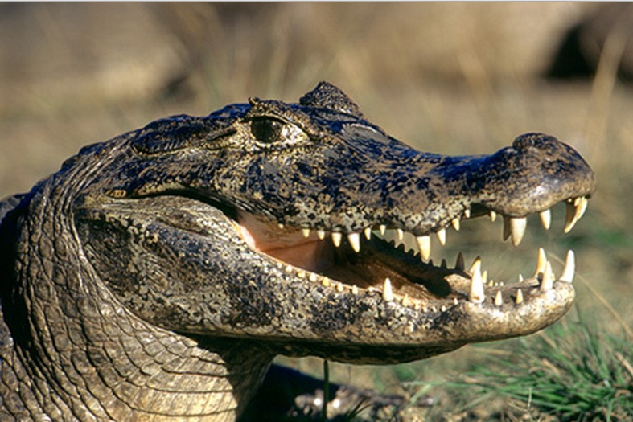

Onça Pintada

Também chamado de jaguar é o maior felino das Américas e o terceiro maior do mundo, ameaçado de extinção no Brasil por conta da caça ilegal, aumento do desmatamento e queimadas.
Carnívoro e vertebrado pertencente a família felidae com o seu nome cietífico de Panthera Onca.
Habitat
Estão espalhados na América do Norte, Central e Sul, vivendo cerca de 15 anos na floresta e se criadas em cativeiro os anos aumentam em cerca de 10 anos.
Reprodução
As fêmeas atingem a maturidade sexual em cerca de 2 anos e os machos em 3, eles se encontram por meio do odor e pelas vocalizações que realizam durante a época do acasalamento. A gestação dura cerca de 3 meses e a cada ninhada ela tem de 1 a 4 filhotes.
Peso
Entre 55kg e 135kg
Altura
Varia entre 68cm e 76cm, e sua cauda pode medir cerca de 45cm a 63cm, além do seu comprimento total de corpo que chega a 1,4 e 1,8 metros entre os machos e as fêmeas é de 1,2 a 1,7 metros.

Curiosidade
Os filhotes nascem cegos, portanto nos primeiros meses de vida são totalmente dependentes da mãe.
Arara Azul

Destacada pela sua beleza, sendo a maior espécie do grupo dos psitacídeos
Altura
Chega a atingir mais de um metro de comprimento do bico até a ponta da cauda.

Habitats
É encontrada em formações savânicas ou florestas no Brasil, Paraguai e Bolívia, as maiores populações são encontradas no Pantanal
| Nome Científico |
Reino |
Filo |
Classe |
Ordem |
Família |
| Anodorhynchus Hyacinthinus |
Animalia |
Chordata |
Ave |
Psittaciformes |
Psittacidae |
Peso
Até 1,3kg, quando filhotes apresentam cerca de 30 gramas e 82mm.
Reprodução
Os ovos são colocados em ninhos localizados principalmente em ocos de árvores e em paredões rochosos, geralmente a fêmea bota entre um e três ovos, chocando-os por volta de um mês. Os filhotes só aprendem a voar depois de três meses entretanto se separam dos pais aos 12 ou 18 meses.
Alimentação
Alimentam-se de frutos como buriti, bicuri e macaúba.
Curiosidade
Sua incrível longevidade permite que em cativeiro viva até 80 anos e na natureza varia entre 30 e 50 anos.
Jacaré-Açu

O Melanosuchus niger Também conhecido por Jacaré-Açu é o maior jacaré do Brasil, podendo chegar até seis metros de comprimento e 100 anos de idade.Apresentando uma coloração escura com manchas.

Reprodução
Ocorre uma vez por ano em média com uma ninhada de 40 a 50 ovos.
Ameaçado de extinção por conta do valor de seu couro e carne.
Habitats
Águas calmas como lagos com conexão a grandes rios de água escura, igarapés, igapós e áreas alagadas.
Peso
360kg a 500kg
Alimentação
É um carnívoro que tende a se alimentar principalmente de insetos, caranguejos, caramujos, peixes e mamíferos.
Os textos escolhidos foram dos sites: Toda Matéria, Mundo ecologia e Portal Amazonia.